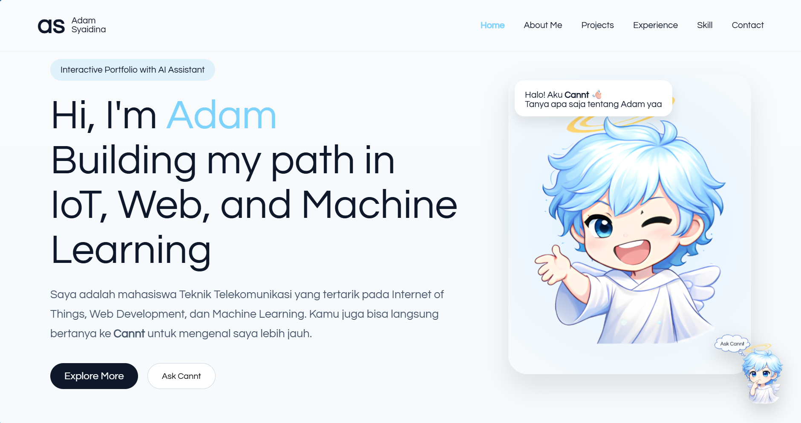
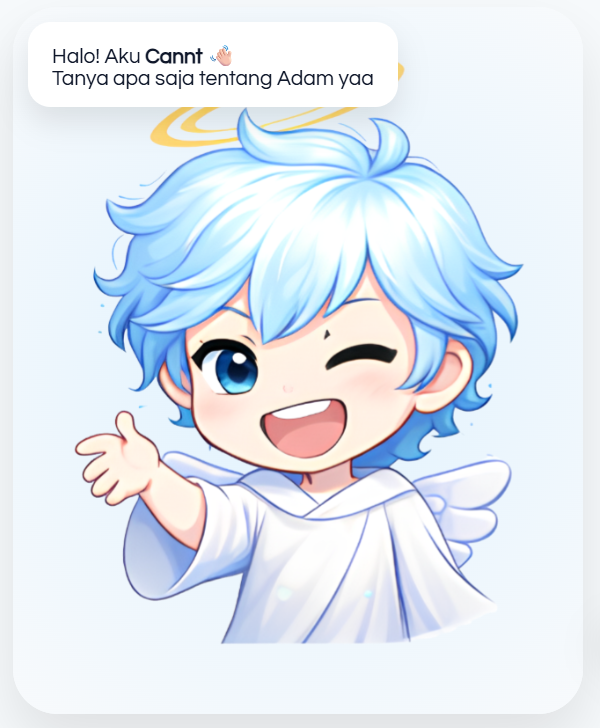
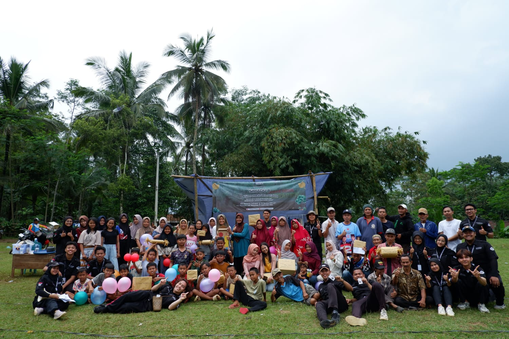
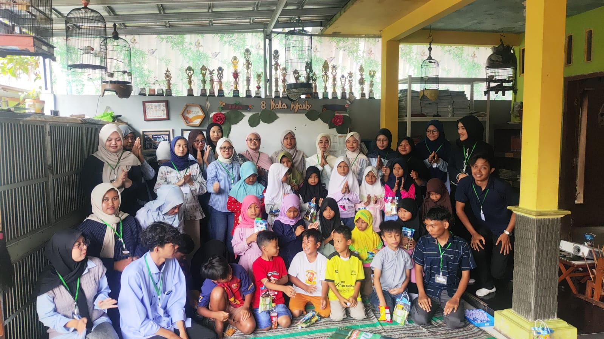
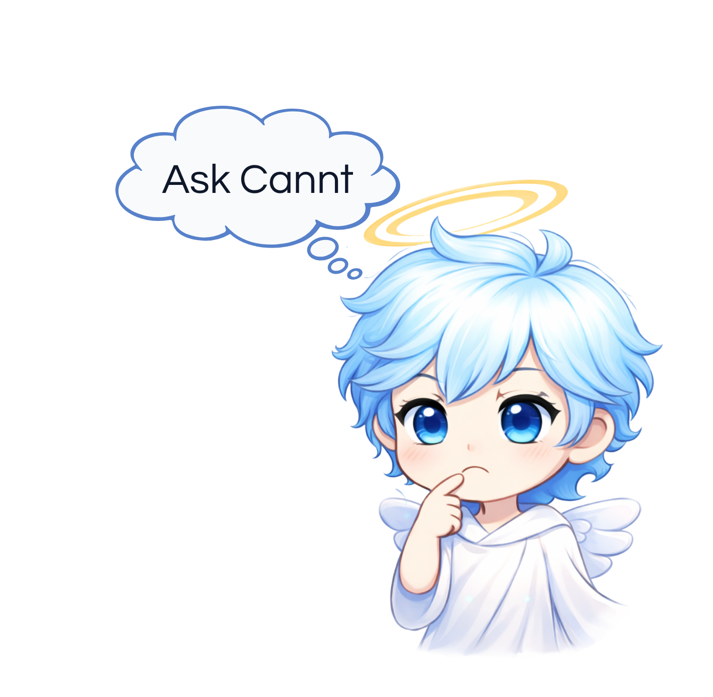

Selected works & initiatives
Beberapa proyek yang mencerminkan minat saya dalam teknologi, pengembangan sistem, serta kontribusi sosial yang berdampak nyata.
Website portofolio personal yang dikembangkan sebagai media personal branding dengan potensi menjangkau 100+ juta pengguna internet. Proyek ini masih dalam tahap pengembangan berkelanjutan dan akan terus diperbarui seiring dengan perkembangan pengalaman dan karya.

Chatbot AI yang dirancang untuk membantu pengunjung mendapatkan informasi secara cepat dan interaktif, termasuk hal-hal yang tidak tercantum di website. Saat ini masih dalam tahap pengembangan dan akan terus ditingkatkan.

Kegiatan bakti sosial di Dusun Wanareta, Banyumas, yang berfokus pada solusi pengelolaan sampah melalui workshop pembuatan paving block dari plastik. Dilaksanakan pada Agustus–September 2025 dan berhasil melibatkan 100+ warga, memberikan dampak nyata bagi masyarakat setempat.

Program volunteer oleh NGO Sankara, di mana saya berperan sebagai Project Leader Regional Purwokerto. Program ini telah dilaksanakan sebanyak 3 kali di lokasi berbeda dengan total 150+ peserta, berfokus pada edukasi dan kontribusi sosial langsung.

